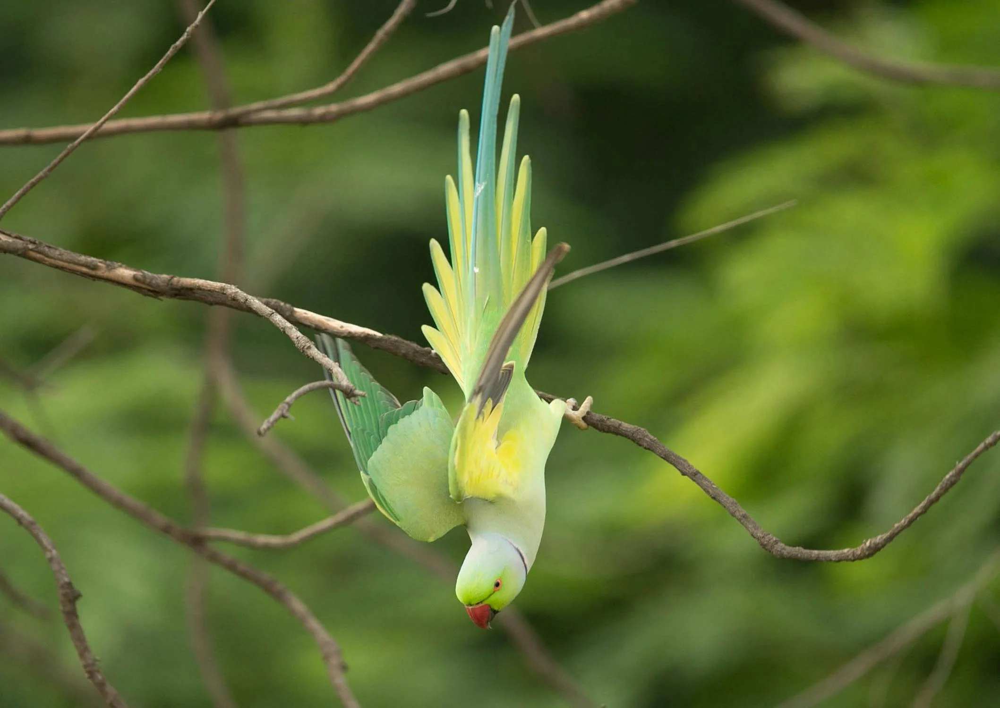
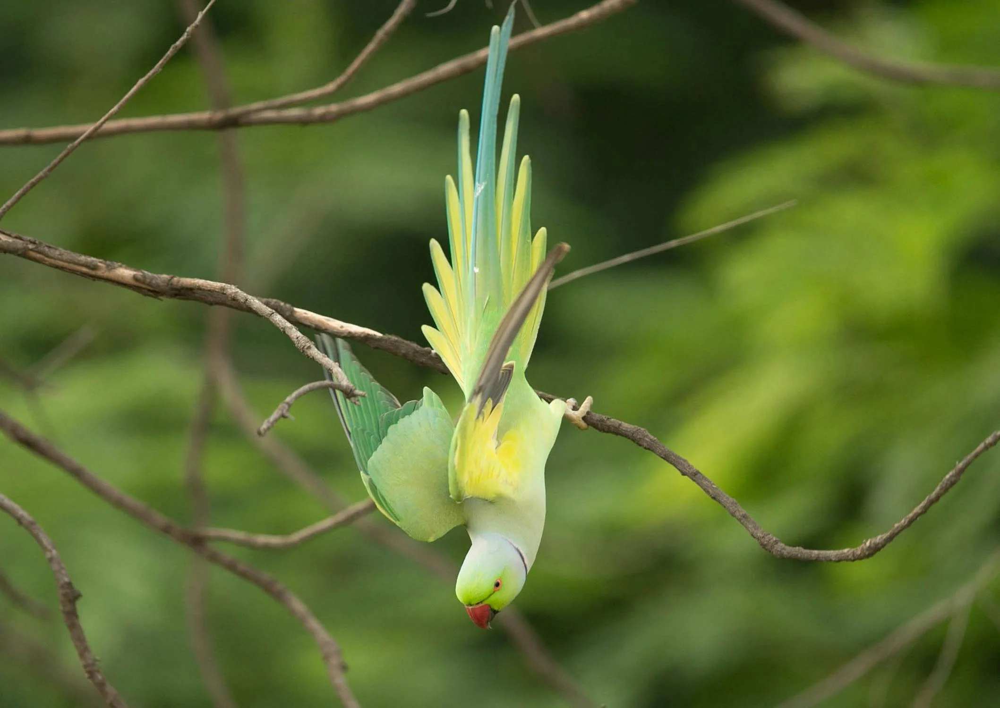
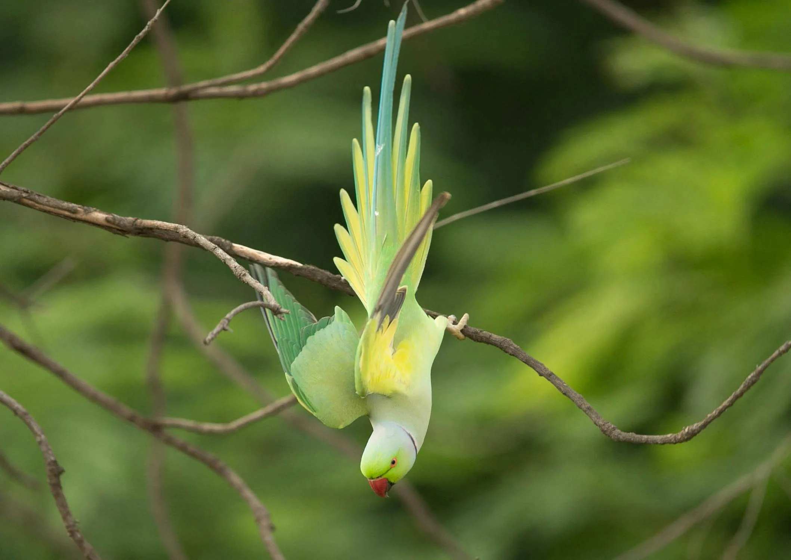

Wildlife refers to undomesticated animals and uncultivated plant species which can exist in their natural habitat, but has come to include all organisms that grow or live wild in an area without being introduced by humans.[1] Wildlife was also synonymous to game: those birds and mammals that were hunted for sport. Wildlife can be found in all ecosystems. Deserts, plains, grasslands, woodlands, forests, and other areas including the most developed urban areas, all have distinct forms of wildlife. While the term in popular culture usually refers to animals that are untouched by human factors, most scientists agree that much wildlife is affected by human activities.[2] Some wildlife threaten human safety, health, property and quality of life. However, many wild animals, even the dangerous ones, have value to human beings. This value might be economic, educational, or emotional in nature. Humans have historically tended to separate civilization from wildlife in a number of ways, including the legal, social and moral senses. Some animals, however, have adapted to suburban environments. This includes urban wildlife such as feral cats, dogs, mice, and rats. Some religions declare certain animals to be sacred, and in modern times, concern for the natural environment has provoked activists to protest against the exploitation of wildlife for human benefit or entertainment. Global wildlife populations have decreased significantly by 68% since 1970 as a result of human activity, particularly overconsumption, population growth, and intensive farming, according to a 2020 World Wildlife Fund's Living Planet Report and the Zoological Society of London's Living Planet Index measure, which is further evidence that humans have unleashed a sixth mass extinction event.[3][4] Different countries have various legal definitions for “wildlife”[5] but according to CITES, it has been estimated that annually the international wildlife trade amounts to billions of dollars and it affects hundreds of millions of animal and plant specimen.
